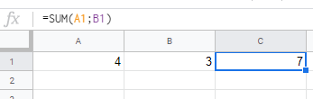
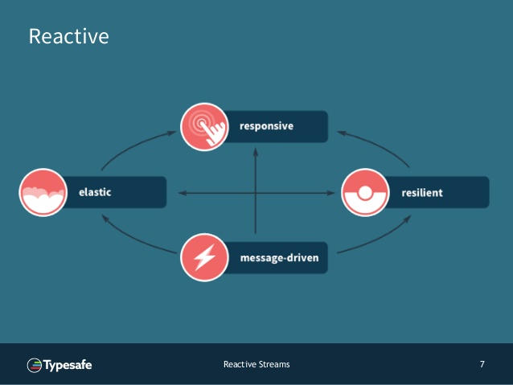
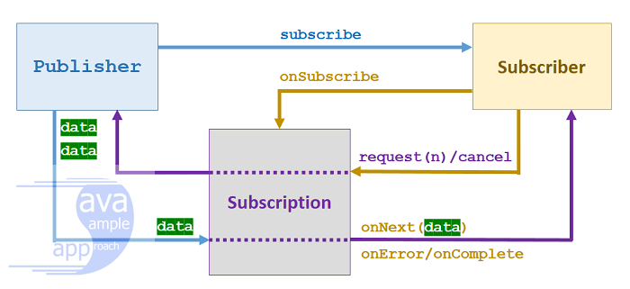
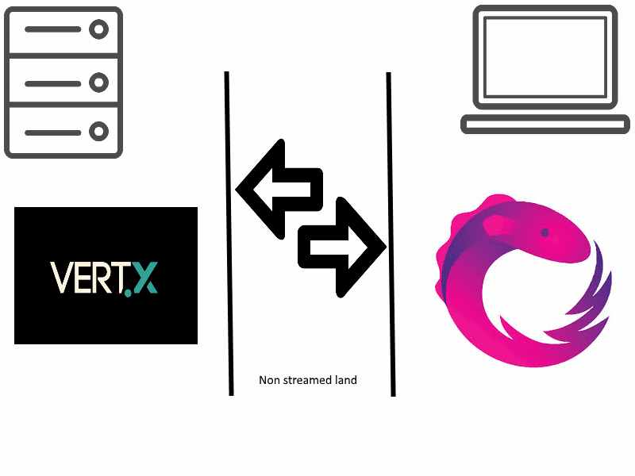
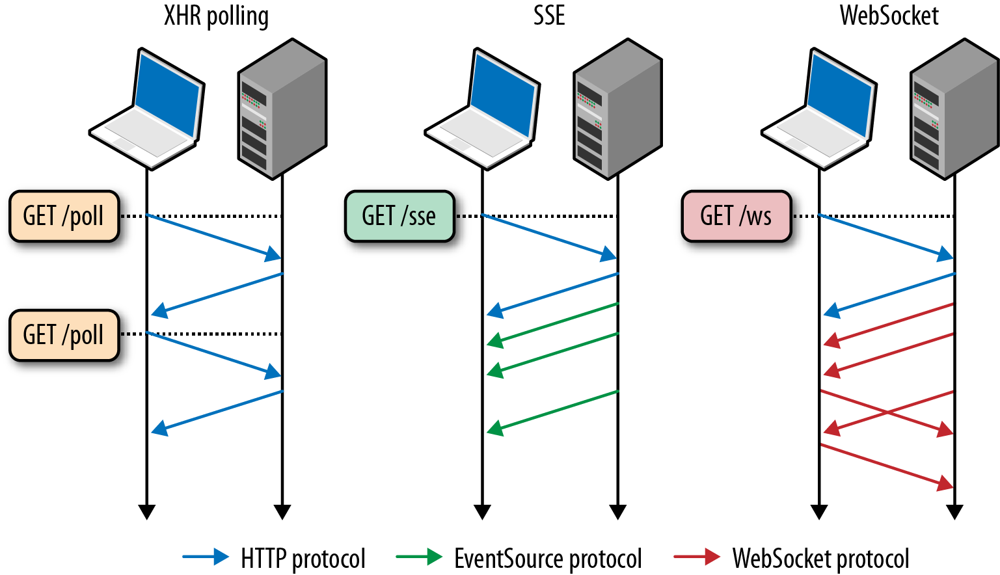
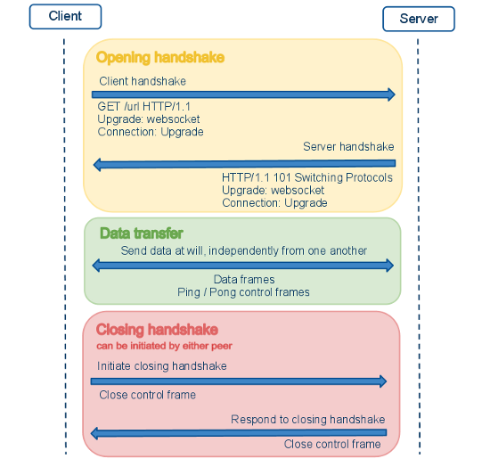
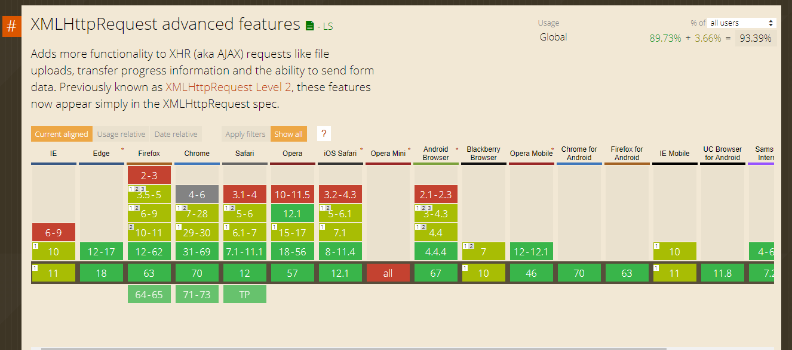

Reactive everywhere?
Feedback on how to fetch data reactively
Before we start, never forget this mantra
Every program has two purposes: The one for which it was written and another for which it wasn't.
Alan J. Perlis
Objectives
Discover what is reactive programming
Discover the state of reactive everywhere
Give feedback on solutions I play with
What is reactive programming?
Definition
Declarative programming paradigm concerned with data streams and the propagation of change
What does it mean?
- Easy to express static data streams (array)
- Easy to express dynamic data streams (event emitter)
- It facilitates the automatic propagation of the changed data flow
Basic use case: a sum
let a = 5;
let b = 3;
let c = a + b;
// a few moment later
a = 4;
c = a + b; // We should recalculate again
We want something like that:
Intermediate use case: zip
- We have two arrays as input
- We have an array as output
- The output array is of grouped elements
- Ex: zip(['a', 'b'], [1, 2]) -> [ ['a', 1], ['b', 2] ]
Zip in motion:
Nota bene: Zip is a transducer
- Transducers are composable algorithmic transformations.
- Transducers compose with ordinary function composition.
According to the reactive manifesto
- Responsive: responds in a timely manner if at all possible
- Resilient: stays responsive in the face of failure
- Elastic: stays responsive under varying workload
- Message driven
Big picture
The reactive manifesto is important
- The manifesto is pretty recent: nearly 2014
- The manifesto is a kind of trend and inspiration
- All stream influences come from this manifesto
- A large variety of architecture, consortiums and frameworks were build based on this manifesto
At the end, we could have reactive stream
Reactive Stream are available since Java 9
https://www.baeldung.com/java-9-reactive-streamsAsynchronous design is smart and efficient
Api Overview
On backend side
Java ecosystem - Spring WebFlux
- Spring frameworks
- Based on Spring Mono for reactive coding
- Based on Spring Flux to introduce reactive code for Web controllers
What is...
- ...Mono? Publisher which returns 0 or 1 element
- ...Flux? Publisher which returns 0...N element(s)
Mono<String> mono = Mono.just("Alex");
Mono<String> mono = Mono.empty();
Flux<String> flux = Flux.just("A", "B", "C");
Flux<String> flux = Flux.fromArray(new String[]{"A", "B", "C"});
Flux<String> flux = Flux.fromIterable(Arrays.asList("A", "B", "C"));
Example - basic
Similar to Java Stream except the input could change at anytime (and we could do parallel tasks)
public Flux<JsonNode> apply(final Flux<ServerSentEvent<JsonNode>> aFlux) {
return aFlux
.filter(evt -> evt.data().isPresent())
.filter(evt -> evt.event()
.map(evtType -> "data".equals(evtType).orElse(FALSE));
}
Example - advanced (part I)
From https://www.baeldung.com/spring-webflux
@RestController
@RequestMapping("/employees")
public class EmployeeController {
private EmployeeRepository employeeRepository;
public EmployeeController(EmployeeRepository employeeRepository) {
this.employeeRepository = employeeRepository;
}
@GetMapping("/{id}")
private Mono<Employee> getEmployeeById(@PathVariable String id) {
return employeeRepository.findEmployeeById(id);
}
@GetMapping
private Flux<Employee> getAllEmployees() {
return employeeRepository.findAllEmployees();
}
}
Example - advanced (part II)
From https://www.baeldung.com/spring-webflux
@Repository
public class EmployeeRepository {
static Map<String,Employee> employeeData;
static Map<String,String> employeeAccessData;
static
{
// ...
}
public Mono<Employee> findEmployeeById(String id) {
return Mono.just(employeeData.get(id));
}
public Flux<Employee> findAllEmployees() {
return Flux.fromIterable(employeeData.values());
}
}
On frontend side
JavaScript ecosystem
- CycleJs
- RxJs (natively used in Angular)
Example - basics
Here how to deal with an autocomplete
const searcher = Rx.Observable
.fromEvent(document.querySelector('input'), 'keyup')
.map((e) => e.target.value) // Project the text from the input
.filter((text) => text.length > 2) // Only if the text is longer than 2 characters
.debounce(750 /* Pause for 750ms */ )
.distinctUntilChanged(); // Only if the value has changed
searcher.subscribe(
(term) =>
console.info('We should raise a search for:', term);
},
console.error
);
In motion
Example - advanced (part I)
@Injectable({
providedIn: 'root'
})
export class EmployeeService {
constructor(
private httpClient: HttpClient
) { }
getEmployees(): Observable<Employee[]> {
return this.httpClient.get<Employee[]>('/employees');
}
}
Example - advanced (part II)
@Component({ /*...*/ })
export class EmployeeComponent {
employees: Employee[] = [];
isError = false;
constructor(
private employeeService: EmployeeService
) { }
load() {
this.employeeService
.getEmployees()
.subscribe(
(employees) => this.employees = employees,
(err) => {
console.error(err);
this.isError = true;
}
);
}
}
So are we reactive everywhere?
Most illustrated uses cases are simple
- Fetch data into a database
- Send the data
- Display the data
Most of the time, this is fine
But the goal of reactive is to deliver data on demand
Here an interesting use case
- Connect to various systems to search some results
- Each system delivers data with some latencies
- Transmit chuncks of results
- Display the data and refresh the ui on each chuncks
And here comes troubles
Who still holds out the invader?
The network!
Indeed
Backend is streamed, frontend is streamed, but not the network
Illustration
Give some latency on backend side on a classical use case
public Mono<Employee> findEmployeeById(String id) {
return Mono.just(employeeData.get(id))
.delayElements(java.util.Duration.ofSeconds(2));
}
In motion
The frontend application will apply reactively only when all data is fetched
Could we find a solution?
Overview
Ajax polling
The idea
- Send a first request to initiate the treatment and retrieve a request token
- Polling the backend with this token to fetch new entries
Pros
- Simple to put in place on frontend side
Cons
- Statefull
- Consumes a lot of bandwidth
- Consumes a lot of memory
- Not really real time
HTTP Push server
Server-side event
The idea
- Send a first request to initiate the treatment
- Backend will send a push message each time we have retrieved data
Pros
- Simple to put in place on frontend side (again)
- Simple to put in place on backend side
Cons
- JavaScript global event (so everyone could intercept it into the page)
- Needs HTTP/2
- Not considered as a good practice to use it
Really
To summarize: there is no one good strategy on how to make best use of this feature of HTTP/2 and everyone is still experimenting
Into some HTTP2 documentation
WebSocket / MQTT
WebSocket principles
WebSocket principles

WebSocket principles
The idea
- Send a Websocket message to start the treatment
- The backend emits the chunck each time we need it, and only for the client
- The backend emits a dedicated message to notify when there is no more chuncks
Pros
- Real realtime
- Pretty fast
Cons
- Be careful with load balancer
- Could be "complex" to put in place
- Need to notify the backend when the client does not want to have more chuncks
Quite frustating, huh?
We have a simple solution
Use of Ajax
I mean
Use of XHR2
Due to HTML5, the XHR has evolved many times
- In 2012
- In 2016
- And still evolves: https://xhr.spec.whatwg.org/
Fun fact (or not)
- XHR was created in 1999 by IE team
- First W3C draft: 2006
- First W3C release: 2009
And browsers welly integrated it
XHR2 features
CORS: evolution
Requested server could allow the call from another domain
Example of HTTP header
Access-Control-Allow-Origin: http://example.com
New formats
- As request / response: at the beginning, only text (or XML)
-
Now we could use
- text
- ArrayBuffer
- Blob (especially for image)
- Document (XML)
- FormData (request only)
New format example (with Blob)
const xhr = new XMLHttpRequest();
xhr.open('GET', '/path/to/image.png', true);
xhr.responseType = 'blob';
xhr.onload = function(e) {
if (this.status == 200) {
const blob = new Blob([this.response], {type: 'image/png'});
// ...
}
};
xhr.send();
New format example (with FormData)
Ease generation of application/x-www-form-urlencoded content
function sendForm() {
const formData = new FormData();
formData.append('username', 'johndoe');
formData.append('id', 123456);
const xhr = new XMLHttpRequest();
xhr.open('POST', '/server', true);
xhr.onload = function(e) { /* ... */ };
xhr.send(formData);
}
And here come the progress event
We have the ability to follow the upload / download progression
Most used case: follow file uploading / downloading
Example
function upload() {
const xhr = new XMLHttpRequest();
xhr.open('GET', '/server', true);
xhr.onload = function(e) { ... };
// Listen to the upload progress.
const progressBar = document.querySelector('progress');
xhr.onprogress = function(e) { // could be too xhr.upload.onprogress
if (e.lengthComputable) {
progressBar.value = (e.loaded / e.total) * 100;
}
};
xhr.send(null);
}
upload();
In motion
What is the idea?
Could we stream JSON?
Spoiler alert: yes
application/stream+json
Instead sending the whole json, we send JSON chuncks
For an array, we will send each entry
What does it mean?
We have to detect each chunck with the progress event
(Because the payload will be malformed)
(For an array, we will have each entries without the brackets)
What to do on backend side?
On backend, we use Spring Web Flux
Good news, this is already stream+json compatible
(The "Accept" header should contains "application/stream+json")
What to do on frontend side?
Sadly, means we have to use XHR directly
(No Fetch api, and most of high level frameworks does not deal with progress event)
Need some code, but quite doable
Example
let streamed = 0;
const xhr = new XMLHttpRequest(); // Deal all XHR cases (failures, etc...)
xhr.onprogress = function(e) {
let chunck = xhr.responseText.substr(streamed;
logElement.innerText += `${chunck}
`;
streamed = xhr.responseText.length;
// Do some code again for parsing, etc...
};
xhr.open("GET", "/employees");
xhr.send(null);
In motion
Hold on!
We have a library
Oboe.js
- Works on NodeJS and browsers (works on IE10)
- Licence BSD
- Ligthweight (4.9k)
- Pretty simple
- http://oboejs.com/
Little example
oboe('/myapp/things.json')
.done(function(things) {
// we got it
})
.fail(function() {
// we don't got it
});
And in our case?
@Injectable({
providedIn: 'root'
})
export class EmployeeService {
getEmployees(): Observable<Employee> {
const employees$ = new BehaviorSubject(null);
const oboeInstance = oboe({
url: '/employees',
headers: {
'Accept': 'application/stream+json'
}
});
oboeInstance
.done((employee) => employees$.next(employee))
.fail((err) => employees$.error(err))
.addListener('end', () => employees$.complete());
return employees$.pipe(
filter((employee) => !!employee)
);
}
}
Step 1: create a BehaviorSubject and Oboe instance
BehaviorSubject is an RxJs Observable where we could change the current value
const employees$ = new BehaviorSubject(null);
const oboeInstance = oboe({
url: '/employees',
headers: {
'Accept': 'application/stream+json'
}
});
Step 2: intercept each chunck
If an error occurs or the request is finished, we close the BehaviorSubject
oboeInstance
.done((employee) => employees$.next(employee))
.fail((err) => employees$.error(err))
.addListener('end', () => employees$.complete());
Step 3: change the method signature
Instead having an observable or employees, we have an observable of employee
getEmployees(): Observable<Employee> {
At the end, a little change on our component
@Component({ /*...*/ })
export class EmployeeComponent {
employees: Employee[] = [];
isError = false;
constructor(
private employeeService: EmployeeService
) { }
load() {
this.employeeService
.getEmployees()
.subscribe(
(employee) => this.employees.push(employee), // pretty simple huh?
(err) => {
console.error(err);
this.isError = true;
}
);
}
}
Et voilà!
Pros and cons
Solution
Pros
- Backend: frameworks deal with application/stream+json
- Backend: easy to deal with non-streamed and streamed json
- Frontend: frameworks to digest the streamed json
- Frontend: isolation (based on an Ajax call)
Cons
- Backend: needs to be design to be hardly streamed
- Frontend: cannot be used with the Fetch API (for the moment)
- Frontend: without framework, need some boilerplate code
- Frontend: better if we can use some Observable
Api Fetch: little focus
New JavaScript Api to replace Ajax as meta api
Based on Promise
fetch('flowers.jpg', { method: 'GET' })
.then((response) => response.blob())
.then((myBlob) => {
const objectURL = URL.createObjectURL(myBlob);
myImage.src = objectURL;
});
Oboe.js
Pros
- OpenSource (BSD 2)
- Works for NodeJs and browsers
- Small (gzipped: 4.9k)
- Advanced API to extract easily what we want into the streamed JSON
Cons
- Last commit: 17 May 2018
- 50k on NPM each week: not bad but could be better
Nota Bene
Our use case comes from a full reactive system
However don't forget that we could use streams
piece by piece
And at the end, have a smart system
Resources
Reactive basics
André Stalz
- Creator of CycleJs
-
Good slides and video around reactive programming
- The introduction to Reactive Programming you've been missing